Префектура Оита · Юфуин · кафе и рёканы
Юфуин без шаблона: кафе с галереями и рёканы, где есть музей, бар и винтажная лавка
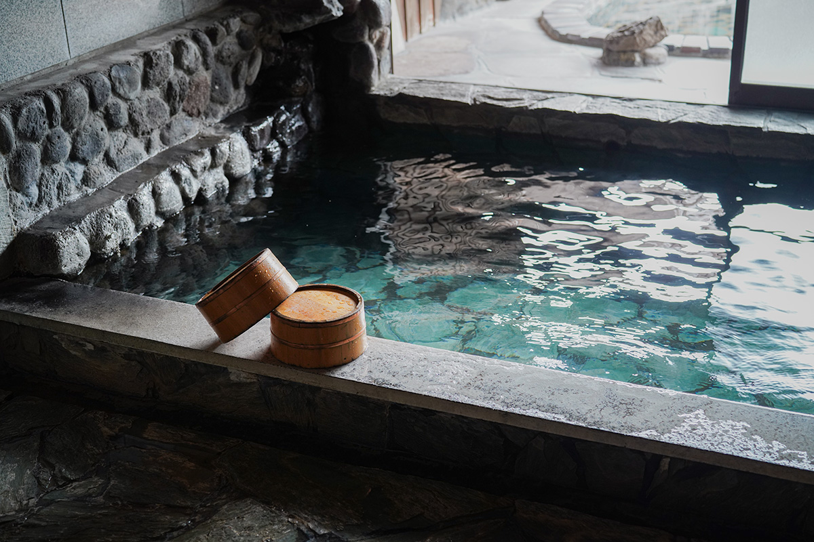
Юфуин, онсэн у подножия горы Юфу, давно обходится без шумных кварталов развлечений. Сюда переезжают люди, которым близок такой характер, и открывают места, где одно дело никогда не бывает единственным: кафе становится галереей, а рёкан превращается в музей или лавку старых вещей.
Принцип
Больше, чем одно дело
Юфуин в префектуре Оита знаменит горячими источниками, но так и не стал курортом с барами и игровыми залами. Люди, которым это по душе, приезжают сюда из больших городов или возвращаются в родные места и открывают собственные рёканы и лавки.
У этих мест есть общая черта: каждое из них делает сразу несколько дел. Кафе CAFE LA RUCHE, ставшее одной из примет Юфуина, и «Ару фукэй», которое открыли хозяева известного рёкана, совмещают кафе с галереей и магазином. В «Сансо Мурата» кроме ресторана и лавок есть даже художественный музей, а «Рёкан Хикари-но иэ» держит винтажный магазин, что для рёкана большая редкость, и постоянно устраивает мероприятия.
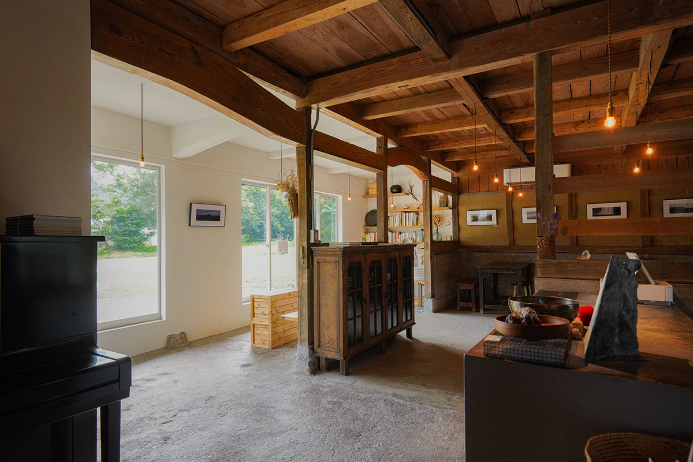
При этом гостей не стараются удержать в одних стенах. Всё больше рёканов сознательно не готовят еду, чтобы постояльцы ходили по ресторанам городка. Так Юфуин запоминается не одной точкой, а целиком, и хочется вернуться сюда снова, к знакомым людям.
Кафе
CAFE LA RUCHE: пекарня и галерея у озера Кинрин
На берегу озера Кинрин стоит двухэтажный дом, где разместились кафе и магазин с галереей современного искусства. Внизу подают свежую выпечку, например круассаны на природной закваске, и кофе собственной обжарки. Здесь гордятся и едой: тартинами и хот-догами. Больше всего ценят места на террасе, откуда вблизи видно озеро, меняющееся от сезона к сезону.
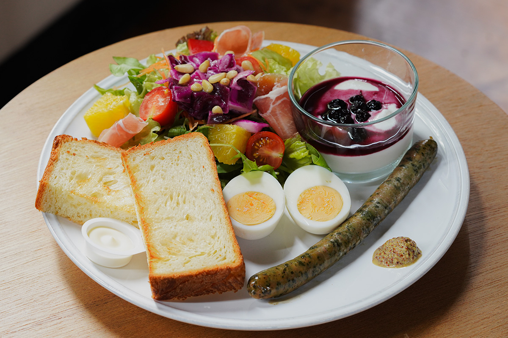
На втором этаже проходят выставки. В 2025 году здесь показывали объёмные работы художницы в выставке «Книжная полка бессонной ночи».
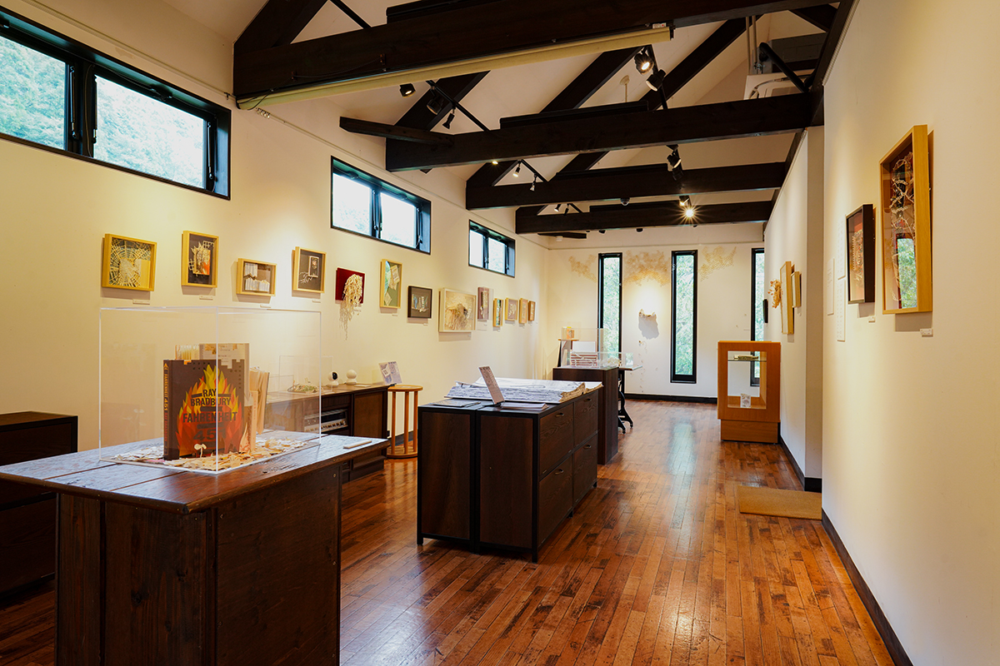
CAFE LA RUCHE
- Адрес
- префектура Оита, город Юфу, Юфуин, Каваками, 1592-1
- Телефон
- +81 977-28-8500
- Часы работы
- 9:00–16:30 (последний заказ в 16:00)
- Выходные
- среда; по четвергам хлеб не продают
- Сайт
- cafelaruche.jp
Галерея
«Ару фукэй»: пейзаж старого Юфуина
Хозяин рёкана «Сансо Варабино» перестроил старый крестьянский дом, где когда-то под одной крышей жили люди и коровы, и в 2023 году открыл в нём кафе с галереей. Прямо перед домом лежат поля, и по ним легко представить, каким был Юфуин прежде. В обед готовят, например, карри с овощами собственного огорода и говядиной бунго-гю. Здесь же устраивают концерты и блошиные рынки, так что дом служит и местом встреч.
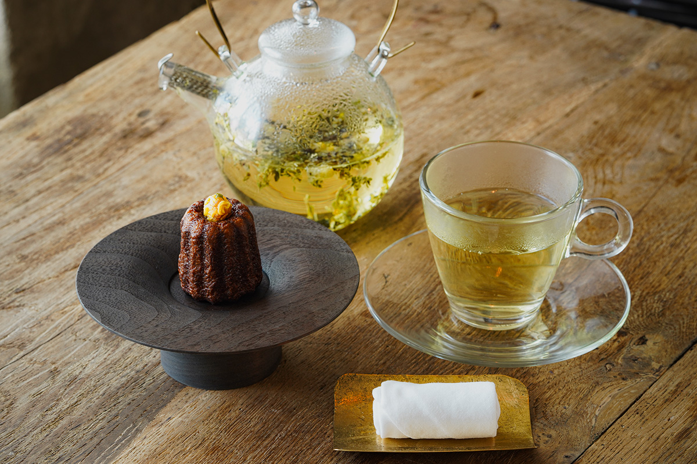
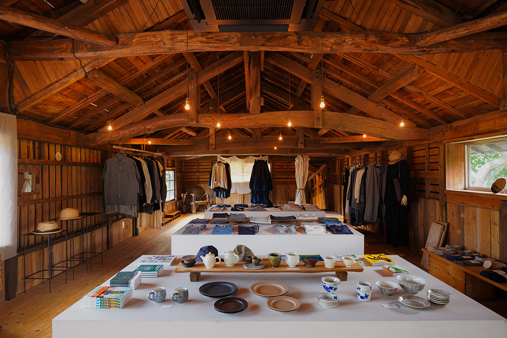
«Ару фукэй»
- Адрес
- префектура Оита, город Юфу, Юфуин, Кавакита, 1265-1
- Телефон
- +81 977-75-8140
- Часы работы
- 11:00–17:00
- Выходные
- вторник, среда, четверг
Рёкан
«Сансо Варабино»: сьюты среди природы
Землетрясение в Кумамото сильно повредило рёкан, и его отстроили заново. В 2019 году он открылся под девизом «рёкан, одетый в пейзаж Юфуина». На огромном участке около 11 500 квадратных метров разбросаны семь отдельных корпусов с 13 номерами, и все они сьюты. Обстановка современная, но комнаты словно продолжаются в окружающую природу. В номерах онсэн с проточной водой.
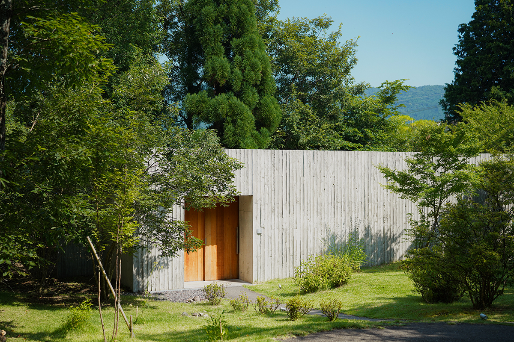
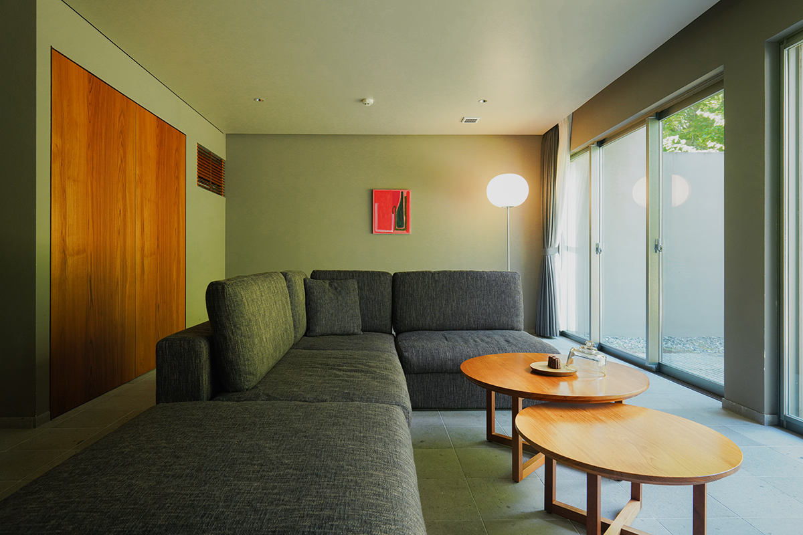
«Сансо Варабино»
- Адрес
- префектура Оита, город Юфу, Юфуин, Кавакита, 952-1
- Телефон
- +81 977-85-2100
- Цены / Вход
- от 38 000 иен за номер в сутки с ужином и завтраком (с налогом и сервисным сбором)
- Сайт
- warabino.net
Рёкан
«Сансо Мурата»: старые дома, бар и музей
Рёкан открылся в 1992 году у подножия горы Юфу. Отдельные корпуса прячутся в зелени, и большинство из них это старинные дома, перевезённые сюда из разных уголков Японии. Вкус покойного основателя чувствуется во всём. Символом рёкана считают бар Tan’s bar, а ещё здесь есть ресторан, музей и магазины, так что по большой территории приятно гулять, не выходя за ворота.
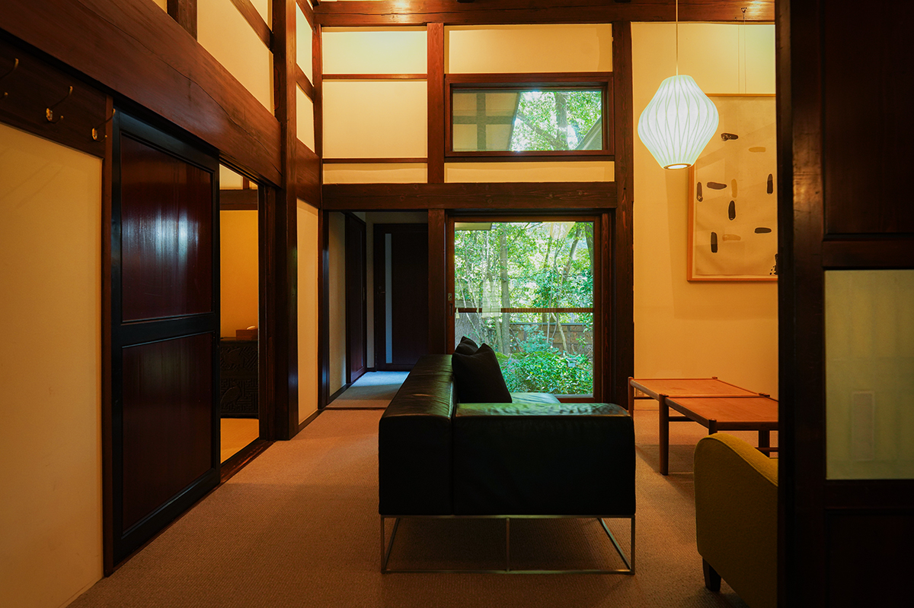
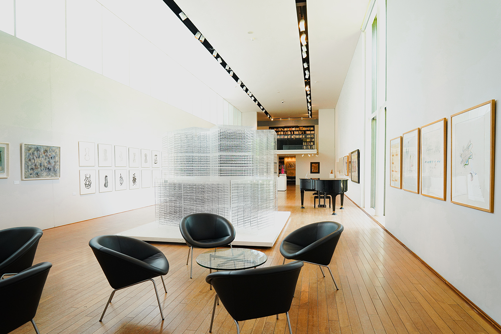
«Сансо Мурата»
- Адрес
- префектура Оита, город Юфу, Юфуин, Каваками, 1264-2
- Телефон
- +81 977-84-5000
- Цены / Вход
- от 85 800 иен за номер в сутки с ужином и завтраком (с налогом и сервисным сбором)
Онсэн
«Цуканома»: голубая вода и жизнь как на водах
Этот рёкан вернулся к тому, с чего начинался Юфуин: к месту, куда едут лечиться водами. Еду здесь не подают, номера сдают как отдельные домики. Можно готовить на маленькой кухне в номере или на общей «кухне для всех» (за плату), варить продукты в котле на пару от горячего источника или ходить ужинать в город и проводить дни в духе тодзи, лечения водами. Собственный источник хлоридно-натриевый, богатый метакремниевой кислотой, и его воду хвалят за то, что она делает кожу гладкой.
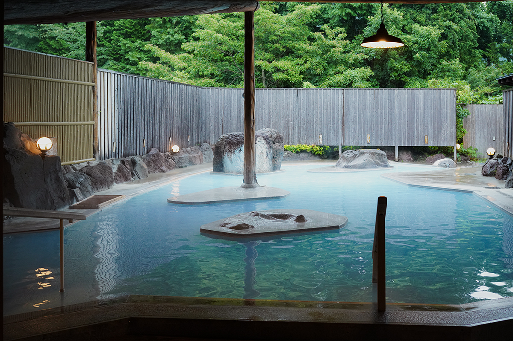
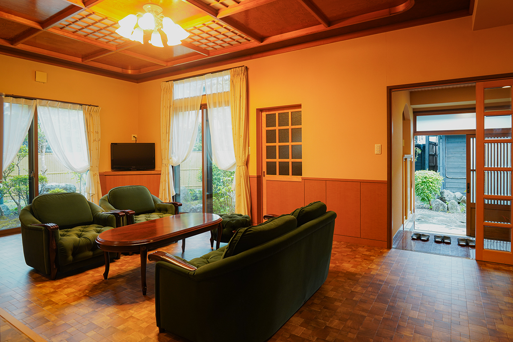
«Цуканома»
- Адрес
- префектура Оита, город Юфу, Юфуин, Каваками, 444-3
- Телефон
- +81 977-85-3105
- Цены / Вход
- от 7500 иен за номер в сутки без питания (с налогом и сервисным сбором)
- Выходные
- среда, четверг
- Сайт
- tsukanoma.club
Рёкан
«Рёкан Хикари-но иэ»: старые вещи и музыка
Хозяин, уроженец города Оита, по стечению обстоятельств взял на себя закрытый тогда рёкан у подножия горы Юфу. В здании сохранилась атмосфера прошлых лет: восемь номеров и лавка, где продают старую утварь, народные игрушки и подержанную одежду. Пригодился и прежний опыт хозяина: он устраивает временные магазины одежды, а рёкан служит площадкой для его музыкального фестиваля fumotode.
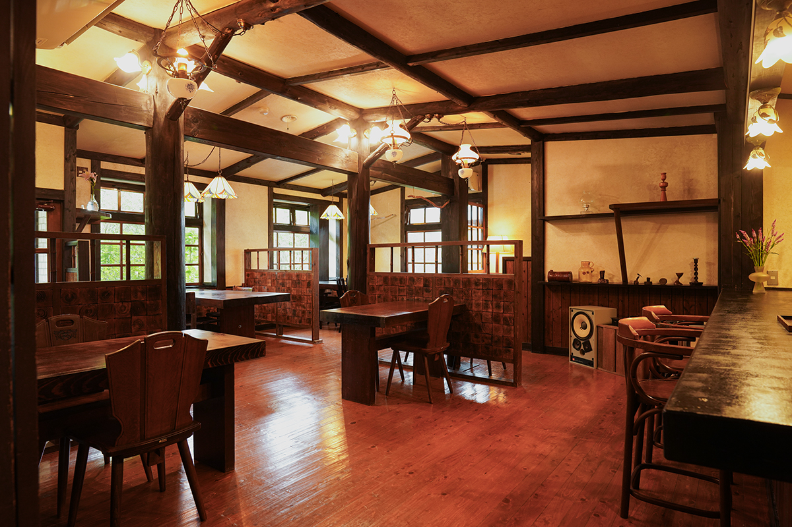
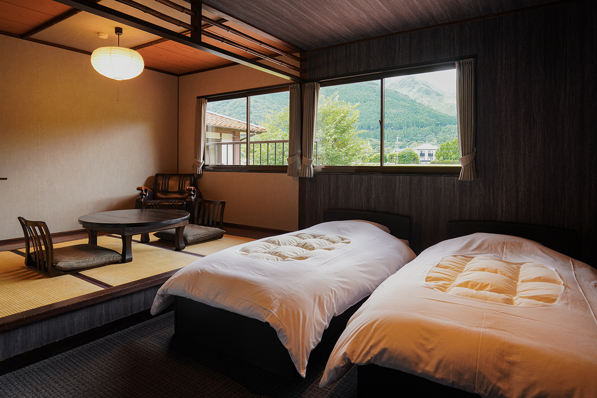
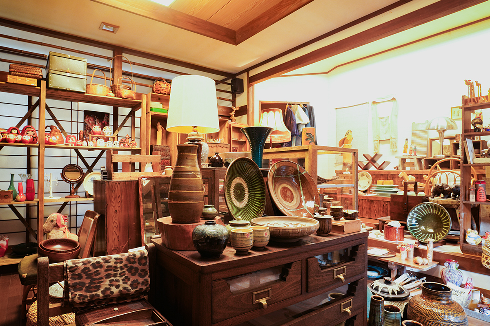
«Рёкан Хикари-но иэ»
- Адрес
- префектура Оита, город Юфу, Юфуин, Каваками, 2490
- Телефон
- +81 977-85-3011
- Цены / Вход
- от 8800 иен за номер в сутки без питания (с налогом и сервисным сбором)
- Сайт
- hikarino-ie.com
Фото: Адзуса Сигэнобу.